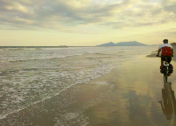

Uma Forma Saudável de Fazer Turismo
O cicloturismo é uma forma de turismo que consiste em viajar utilizando como meio de transporte uma bicicleta. É uma maneira muito saudável e ecológica de se fazer turismo.
Há duas modalidades básicas de cicloturismo: de forma autônoma e com suporte. Viajar com autonomia pode ser praticado tanto solitariamente como em grupo. Nesta modalidade o viajante leva consigo tudo o que precisa na viagem, normalmente nas bolsas específicas para bicicleta chamadas alforjes.
Na modalidade com suporte, geralmente o viajante contrata o serviço de uma operadora, que organiza o roteiro, hospedagem e alimentação, normalmente transporta os pertences do viajante e oferece serviço de guia.
mais dicas aqui